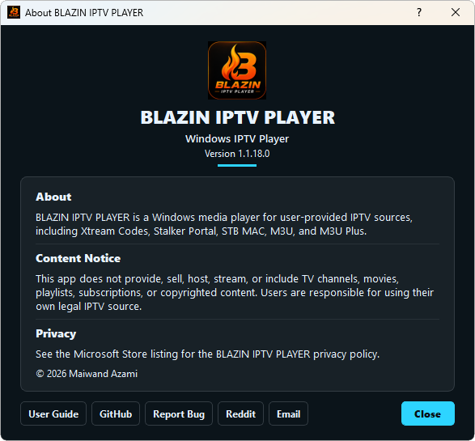

Windows IPTV Player
Review the complete Windows workflow, supported source types, browsing tools, and playback options.
Start the 7-day free trial from the Microsoft Store and test BLAZIN IPTV Player with your own legal M3U, M3U Plus, Xtream Codes, STB MAC, or Stalker Portal source.
No channels, playlists, subscriptions, or provider accounts are included.

Windows download options
Install BLAZIN IPTV Player from the Microsoft Store, then test the Windows app with the legal playlist or portal details you already use.
The Microsoft Store trial tests the player software only. BLAZIN IPTV Player does not provide free IPTV channels, playlists, streams, subscriptions, or provider accounts.
Trial checklist
Add the same legal playlist or portal details you plan to use day to day.
Confirm whether EPG data appears from your source and whether categories load clearly.
Test internal playback, favorites, search, themes, and any external player settings you use.
FAQ
No. It is player-only software. You provide your own legal playlist, Xtream Codes account, STB MAC details, or Stalker Portal information.
Yes. BLAZIN IPTV Player offers a 7-day free trial through the Microsoft Store so you can test the Windows IPTV workflow before deciding.
The app is designed for M3U, M3U Plus, Xtream Codes, STB MAC, and Stalker Portal sources, depending on what your legal provider supports.
Yes. EPG support is included where the provider or playlist supplies compatible program guide data.
Use the Microsoft Store button on this page. The trial and install flow are handled through the Microsoft Store listing.
Related setup guides
Review the complete Windows workflow, supported source types, browsing tools, and playback options.
Learn how to load a local playlist file, remote M3U URL, or M3U Plus source.
Use the server URL, username, and password supplied by your legal source.
Set up a compatible portal and MAC profile with optional compatibility controls.
Configure an authorized portal profile and advanced fields only when required.
Understand how source-provided program information appears in the Windows player.
Before you download
Install BLAZIN IPTV Player from the Microsoft Store and test it with your own legal M3U, Xtream Codes, STB MAC, or Stalker Portal source. You can evaluate EPG support, internal playback, external player behavior, profiles, search, favorites and 33 themes.
7-Day Free Trial
Install from the Microsoft Store, add your own legal playlist or portal details, and test the Windows IPTV workflow before deciding whether it fits your setup.
BLAZIN IPTV Player is player-only software. It does not provide channels, playlists, streams, provider accounts, or copyrighted content.